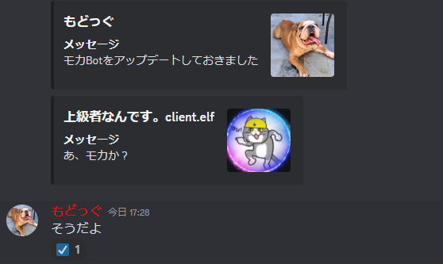

グローバルチャットに接続する方法
グローバルチャットを作成する方法
まず、グローバルチャットにしたいチャンネルを作成します。
その後に、「mc!gchat」を実行します。
これで作成することができました。
※ただし、常にある名前と同じグローバルチャットを作成することはできません。
グローバルチャットに参加する方法
まず、グローバルチャットにしたいチャンネルを作成します。
その後に、接続したいチャンネルの名前に変更します。
これで参加することができました。
もどる
